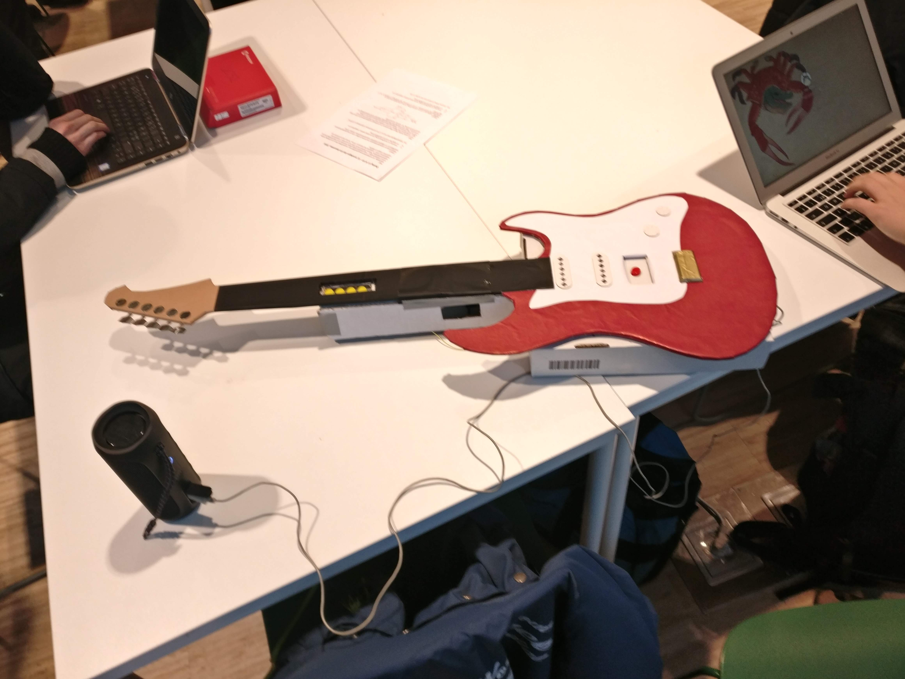

Who am I?
- Computer Science student at KTH
- Scout and musician
- Audio and lighting technician

Hello World!
This was a course project to learn more about embedded programming, together with . The program was developed for a PIC32 microcontroller using an IO shield and some external buttons connected to hardware pins on the chip. As you can see on the tiny screen in the image above the player is presented with some dots running down the screen where the player must press the right combination of buttons and the strum button att the right time for them to score. On the screen above the player seems to have been a bit early in strumming as displayed on the screen.
The entire thing was packed in a flaming hot red case and gathered much interest in the project conference where students got to try out each others projects. The tiny screen was placed inside the little rectangular slot at the side of the guitar neck and there was also a speaker connected playing som terribly offbeat sine waves. Of course, no one could beat my high-score in the game.
Our first "major" (3 weeks) project in school at the end of first year. A chess game developed with GoLang using game library Ebiten. The players took turns to move their pieces to any legal square and the game ended with the capture of the opposing king. The rules castling, en passant and pawn promotion as well as check and checkmate were not implemented in the game, hence the "crappyness".